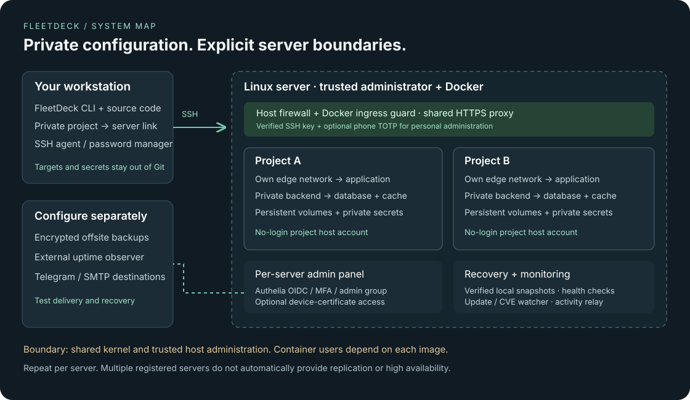

Private project targets
Named servers, saved project destinations and last observed FleetDeck versions. SSH agent support, including 1Password.
Workstation setup ↗CLI NATIVE. SELF HOSTED. MIT LICENSED.
Take a Docker Compose project from your laptop to your Linux server. Keep secrets private, back up before updates, and see what is running.
One trusted VPS or several named servers. Your infrastructure stays yours.
# Link once. Stored outside your repository.
$ fleetdeck project link . \
--server production \
--name my-app \
--domain preview.example.com# Your next update
$ fleetdeck deploy .BUILT ON ESTABLISHED TOOLS
01 / FROM WORKSTATION TO SERVER
Private project links remember where an application belongs. FleetDeck checks the server, preserves its configuration and creates a verified recovery point before replacing source.
Provision Docker, HTTPS routing and firewall rules. Verify administrator access and recovery.
Choose a named server, project and preview domain. Save the target privately on your workstation.
Keep server secrets, verify a snapshot, build the candidate and check Compose readiness.
Track health and security findings. Test restoration and review changes before updating again.
02 / A PRACTICAL OPERATING TOOLKIT
Start in the terminal. Add a protected admin panel, monitoring and notification channels as your setup grows.
Named servers, saved project destinations and last observed FleetDeck versions. SSH agent support, including 1Password.
Workstation setup ↗Configuration, supported database dumps and volume archives. Check integrity, retain old images and practice restoration.
Recovery runbook ↗Projects, bounded release jobs and monitoring in the browser. Protect access with Authelia, required factors and an admin group.
Identity & admin access ↗Telegram and email notifications, SSH activity summaries and Prometheus metrics. Distinguish an HTTP failure from a Cloudflare challenge.
Monitoring & alerts ↗Scheduled release/package checks, Trivy scans and runtime findings. Notify on changes. Failed checks remain unknown.
Configure the watcher ↗A separate workflow for immutable images, explicit migration steps and controlled release recovery on the server.
Release workflow ↗03 / KNOW THE BOUNDARIES
Project networks separate application traffic. Host accounts organize ownership. The shared proxy, Docker daemon and administrator remain trusted parts of the system.

Enable SSH MFA, enroll passkeys, connect SMTP/Telegram, schedule the security watcher and configure offsite backups explicitly.
Named destinations are supported. Replicated databases, coordinated failover and a complete cross-server control plane are still future work.
04 / BRING YOUR STACK
Templates help you start. Your application's build, health checks, secrets and persistent data determine its deployment requirements.
Static HTML, Astro or Svelte builds, and Next.js. Adjust output directories; SSR needs the right adapter and runtime.
STATIC / SSRCompose your app, database, cache and uploads. Validate each CMS's migrations, mail and restoration procedure.
STATEFUL APPLICATIONSNode, Python, Go or a custom image. Internal services can stay private; worker-only onboarding needs manual configuration.
HTTP / BACKGROUND JOBS05 / SECURITY WITHOUT MAGIC CLAIMS
FleetDeck helps maintain a secure deployment process. It cannot guarantee an application has no vulnerabilities or turn shared-kernel containers into isolated virtual machines.
New managed projects receive a no-login host account with no Docker-group membership. Container users are separate: a third-party image can still start as root. Generated runtime controls and the watcher help you inspect that configuration. Use separate VMs or hosts for mutually untrusted tenants.
Enrolled personal SSH access can require both an SSH key and a phone authenticator. Browser access uses Authelia OIDC with required factors and admin-group checks; optional device certificates add another access boundary. A synced passkey alone does not bind access to one physical device. Test recovery before enforcing factors.
No. The opt-in timer checks release availability, host package updates, running-image vulnerabilities and runtime settings, then alerts on changes. Unknown checks stay unknown. Review advisories, rebuild, back up and test updates before rollout. It does not cover every dependency, exploit or source repository.
The tools are available; your destinations and policies need setup. Configure retention and encrypted offsite copies, verify delivery and run an isolated restore drill. Use an observer outside the VPS so total host outages remain visible. Uptime Kuma and Grafana are optional integrations, not an automatically installed stack.
OPEN CODE. YOUR INFRASTRUCTURE.
Start with a preview project. Verify the build. Test recovery.
Then make the workflow your own.